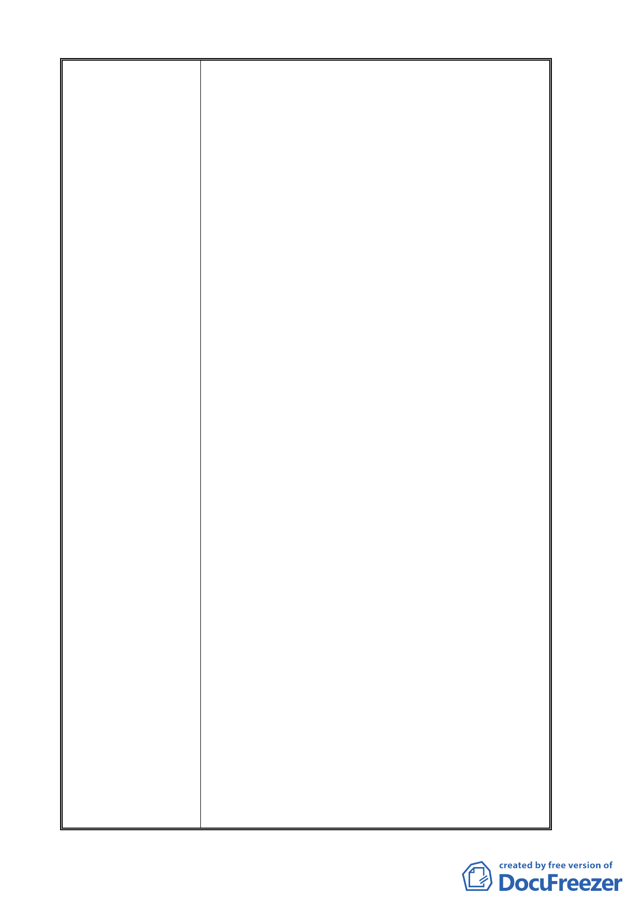

立政治大學)及保護區主要計畫案」及「擬定臺北市
文山區指南山莊大專用地(國立政治大學)細部計畫
案」中的交通改善計畫，提出「未來配合政大門口
三角地與東西側公共設施保留地的都市更新案，以
劃設新道路方式，使車行動線由道南橋進入政大後
直接連通萬壽路，減少經過指南路二段的車流，道
南橋及政大校門口間的指南路二段則規劃為行人徒
步區。」
政大在計畫案中欲將指南路二段規畫為行人徒
步區，等於企圖將指南路二段的道路成為了政大的
門面徒步區，同時，政大竟異想天開的以另闢道路
的方式，替代指南路二段，打算從道南橋進入政大
學區範圍，不經過指南路二段，直通到萬壽路，另
行開闢一條新道路，而在計畫開闢新道路上的民
宅，政大竟然自私的要人家拆除，完全不顧當地住
戶的權利，消息一出，當地住戶紛紛認為自家房屋
要被拆除，引起恐慌，並憤怒的向本席及當地里長
陳情，表示政大豈可自私的欲霸佔道路，卻犧牲當
地住戶的居住權及財產權呢？要求本席替住戶討公
道。
三、利害關係人政治大學得標「木柵二期重劃區與政治
大學周邊地區整體規劃與改善計畫案」，有瓜田李下
之嫌，且黑箱作業，透明化不足。
台北市政府都發局公開招標「木柵二期重劃區
與政治大學周邊地區整體規劃與改善計畫案」，最後
得標的竟是利害關係人－政治大學，由政大自身規
劃政大周邊地區的整體規劃與改善計畫，可想而
知，日後必定好處吃盡，而且根本是自導自演，有
瓜田李下之情事，本席認為此計畫案根本不適宜委
託給政大。
政大在 99 年 1 月 12 日召開期初居民座談會時，
僅邀請住戶與里長參加，並未邀請選區議員及社區
管委會主委，就算未邀請選區議員，本席長期居住
在政大周圍，也是當地居民，依舊未獲邀參加，政
大表面上好像邀請居民一同參與座談會，關心當地
社區的未來發展，實際上根本是黑箱作業，透明化
嚴重不足。
四、綜合上述，本席要求：
(一)政治大學欲變更指南山莊機關用地為大專用地，應
將原指南山莊機關用地全部納入，絕不允許政治大
學挑肥撿瘦。
(二)有關「變更臺北市文山區指南山莊機關用地為大專
- 14 -